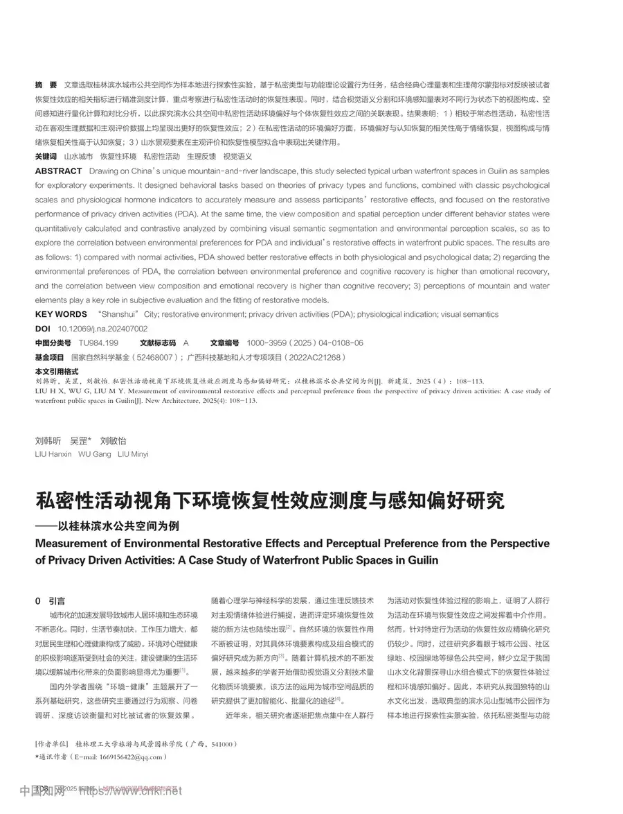
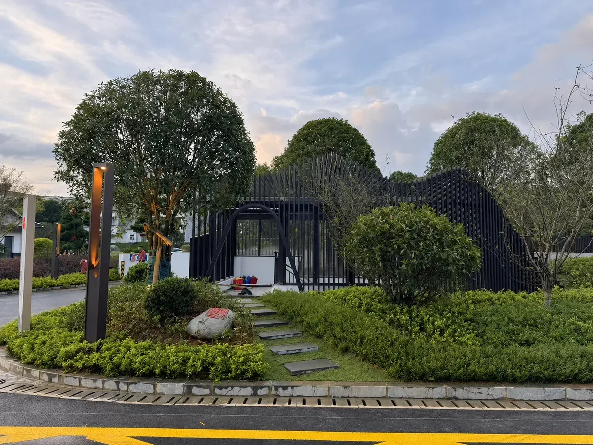
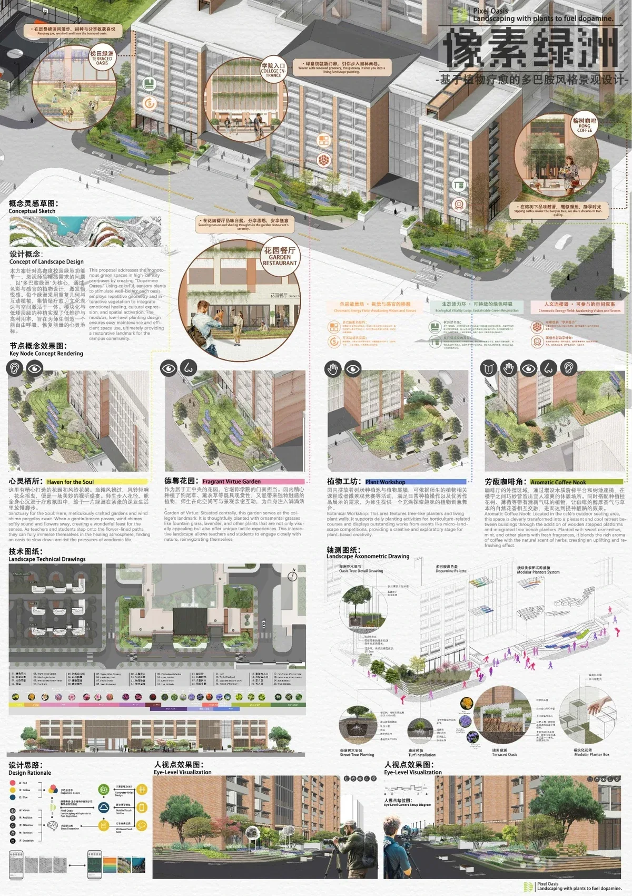
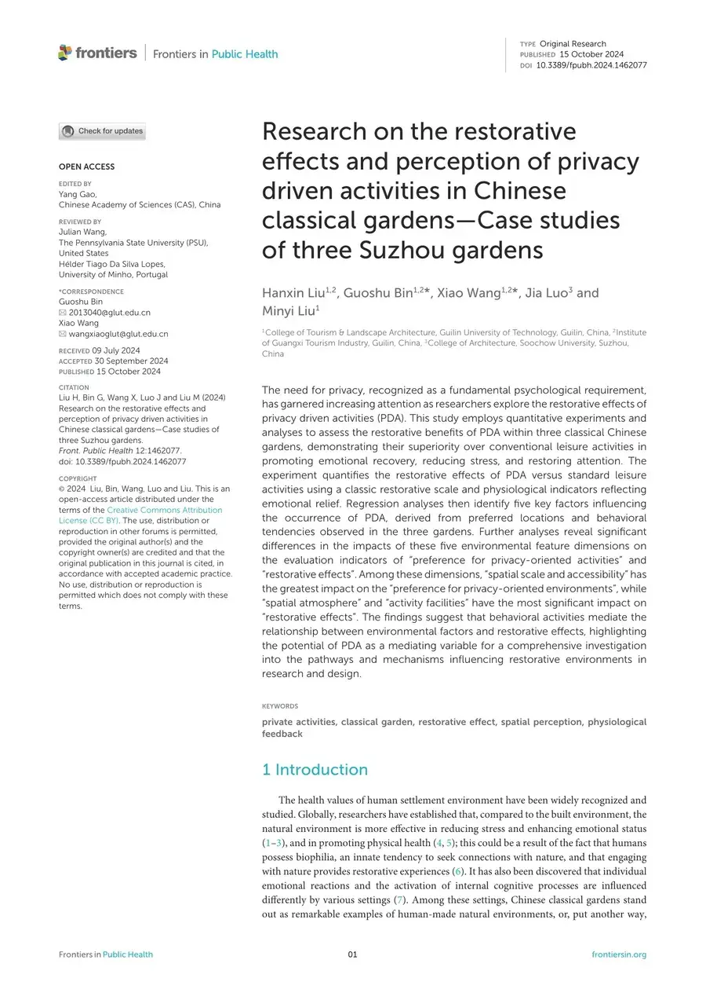
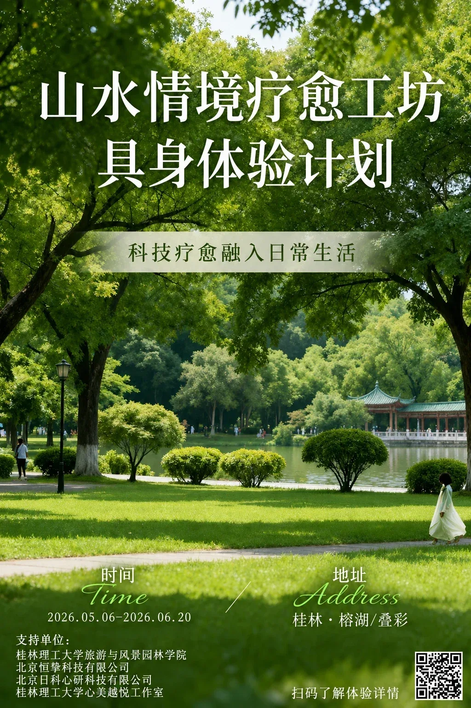
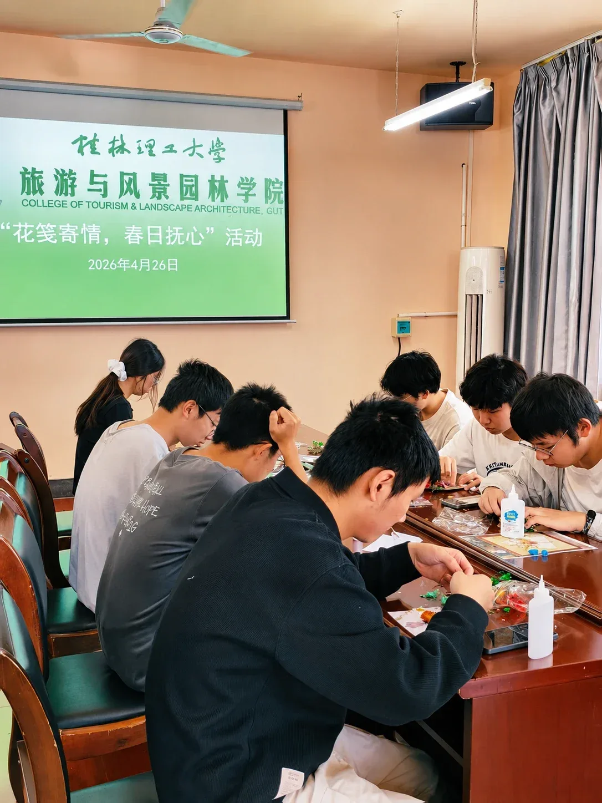
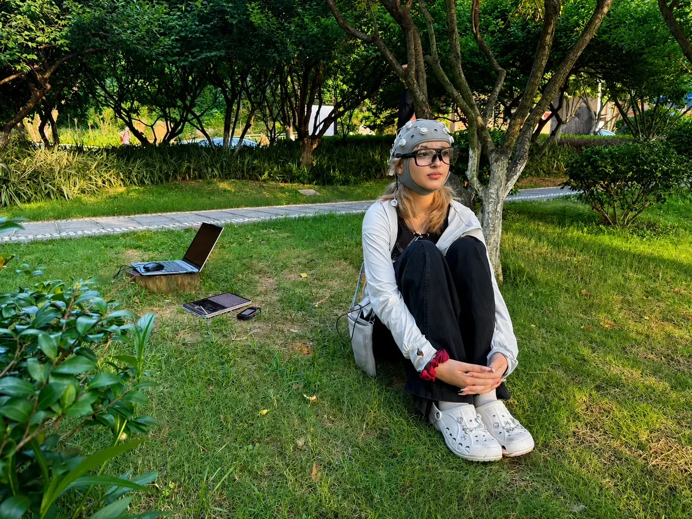

- 本站（刘韩昕疗愈环境与城市空间研究网站）所展示的全部原创内容，包括但不限于文字介绍、研究成果、论文资料、项目案例、设计作品、图片、视频、图表、界面设计及相关视觉元素，均受《中华人民共和国著作权法》《中华人民共和国商标法》及相关法律法规保护。未经本站及相关权利人书面许可，任何单位或个人不得擅自转载、复制、修改、传播、展示或用于商业用途。
- 本站部分内容来源于科研论文、公开发表成果、合作项目资料及相关授权资源。其中论文、图片、项目资料等版权归原作者、发表机构或相关权利主体所有。本站仅用于学术展示、科研交流及成果传播，不代表对第三方内容权属的改变。如涉及版权问题，请联系本站进行处理。
- 本站欢迎学术交流与合作。经授权使用本站内容时，应注明“来源：刘韩昕疗愈环境与城市空间研究网站”，并按照相关授权范围使用，不得歪曲、篡改或用于商业传播。
- 未经授权转载、复制本站内容的行为，本站将依据相关法律法规追究责任。对于侵犯原创成果、设计作品、科研成果权益的行为，本站保留通过法律途径维护权益的权利。
- 本站引用或展示的第三方信息，仅用于学术研究、教育展示和公共交流目的，相关内容版权归原作者及所属机构所有。如权利人认为相关内容侵犯其合法权益，请及时联系我们，我们将在核实后进行处理。
- 本站科研成果、设计案例及项目资料涉及合作单位、学校、团队成员及研究对象的信息时，将遵循科研伦理、知识产权保护及个人信息保护相关要求。未经许可，不公开涉及个人隐私或未授权传播的信息。
- 本网站所有内容的最终解释权归刘韩昕疗愈环境与城市空间研究团队，所有权利保留。
HEALING CITY LABRESTORATIVE ENVIRONMENT
已进入新板块01 / 04
01
HEALING UPDATES
疗愈动态
汇集论文成果、疗愈实践、竞赛项目与具身体验计划，点击缩略图进入完整内容。
08项内容

飞凤小学微景观制作活动
点击查看完整内容 ↗

榕湖景观提升项目
点击查看 ↗
像素绿洲
点击查看 ↗


花笺寄情，春日抚心
点击查看完整内容 ↗
榕湖｜叠彩疗愈工坊体验
点击查看完整内容 ↗
AUTO SCROLL · 4.3秒自动切换
已进入新板块02 / 04
02
PUBLICATIONS / PAPERS
论文成果
19篇论文原件完整保留。点击成果卡片查看中间页，再次点击进入原文阅读。
19篇论文成果
已进入新板块03 / 04
03
HEALING PROJECTS
疗愈项目
呈现团队已完成和正在推进的疗愈环境实践与竞赛探索，点击项目卡片进入完整项目长页。
05个项目内容
COMPETITION PROJECTS
竞赛项目
已进入新板块04 / 04
04
THE HEALING CITY TEAM
团队介绍
由刘韩昕教授与六位研究生共同组成，点击成员头像进入个人介绍。
07位团队成员
排名不分先后 · TEAM MEMBERS